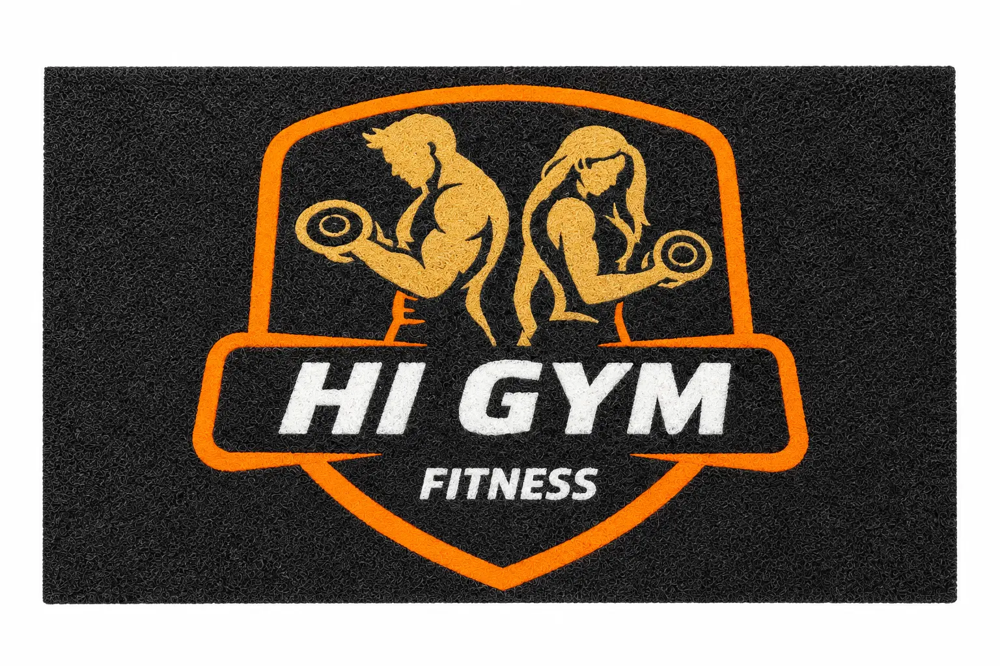
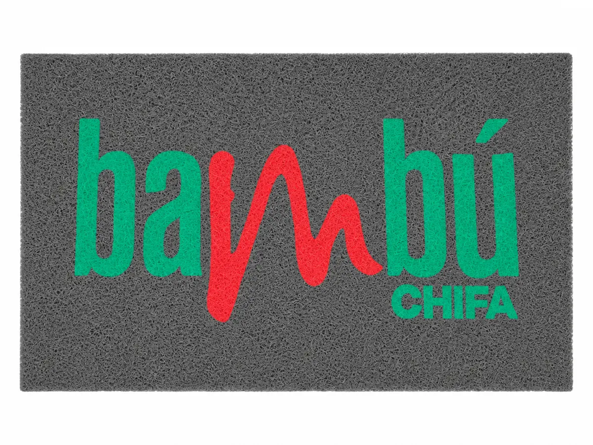
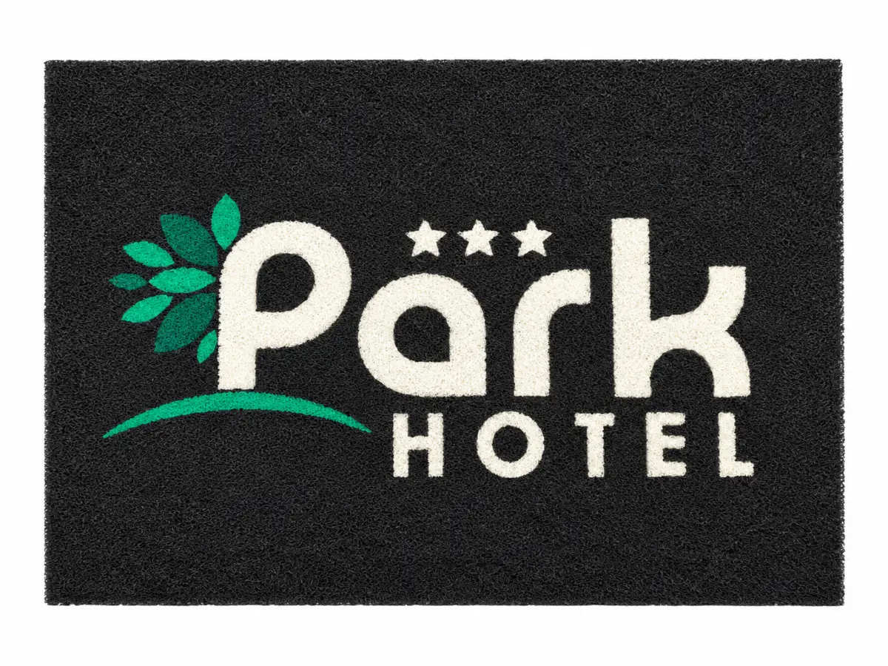
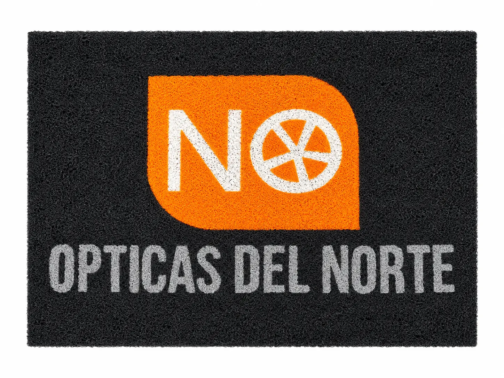
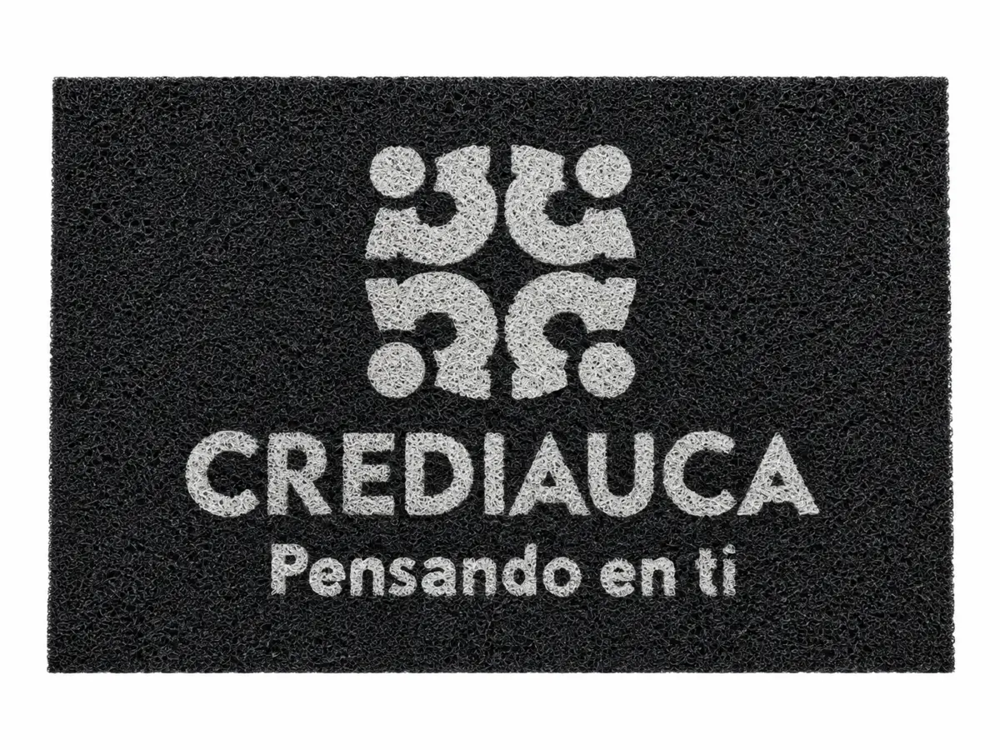

Escuchamos primero
Cada entrada, logo y nivel de tránsito necesita una respuesta distinta.
FELPUDOS CORPORATIVOS PERSONALIZADOS
Creamos felpudos de PVC tipo rizo que protegen tu espacio y presentan tu negocio antes de decir una sola palabra.

LA PRIMERA IMPRESIÓN TAMBIÉN SE DISEÑA
Analizamos tu logo, las medidas, el tránsito y el espacio para convertir una necesidad funcional en una entrada que represente tu marca.
ELIGE SEGÚN TU ENTRADA
No tienes que adivinar. Te orientamos según el flujo de personas, la ubicación y el nivel de exigencia.
PORTAFOLIO



¿Listo para ver tu marca en la entrada?
NUESTRA HISTORIA
LOGOMAT nace del conocimiento construido durante más de 18 años y de la decisión de transformar un oficio en una empresa propia.
Hoy esa experiencia se convierte en orientación, diseño y trabajo cuidadoso para cada negocio.
EXPERIENCIA QUE SE NOTA
Queremos que LOGOMAT crezca más allá de los felpudos: branding, decoración y soluciones que hagan visible una marca en cada espacio.
Cada entrada, logo y nivel de tránsito necesita una respuesta distinta.
Revisamos proporciones, colores y legibilidad antes de producir.
Buscamos que tu felpudo funcione y represente bien a tu marca.
NUESTRAS CALIDADES
Primero conoce las tres opciones. Después compáralas con claridad.
Para oficinas pequeñas, consultorios y entradas con uso moderado.
La opción recomendada para negocios activos durante el día.
Mayor cuerpo y resistencia para accesos de uso intensivo.
COMPARACIÓN
Abre la tabla cuando ya conozcas las opciones.
PORTAFOLIO DE TRABAJOS
Selecciona un rubro, recorre los proyectos y amplía cada fotografía.
PROYECTO 01 · CUIDADO
Estamos desarrollando un servicio de mantenimiento para conservar su limpieza, color y presencia por más tiempo.
PRÓXIMAMENTE DISPONIBLEQuiero recibir información →
ANTESDESPUÉSRetiro de suciedad acumulada.
Evaluación del desgaste actual.
Mantenimiento periódico.
Conservación de color y presencia.
EXPERIENCIAS LOGOMAT
Un espacio visual para compartir fotos, videos y comentarios reales.
Esta sección queda preparada para incorporar opiniones verificadas sin inventar testimonios.
CONTACTO
Cuéntanos qué necesitas y te ayudaremos a convertir tu logo en una entrada que represente tu marca.
Chiclayo · Envíos a todo el Perú
COTIZADOR LOGOMAT
Configura la calidad, las medidas y el diseño. Al final tendrás una solicitud ordenada para recibir asesoría.
Sin pagos en línea. Revisamos contigo antes de producir.